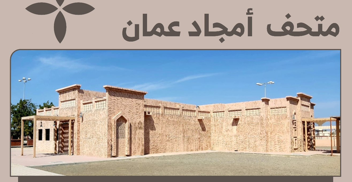

أمجاد عُمان
حمود بن عبدالله العمراني
📍 صحار -
محافظة شمال الباطنة
مدير متحف أمجاد عُمان بولاية صحار، الذي يضم أكثر من 15 ألف قطعة أثرية وتراثية.
متحف تراثيكنوز تحفظ ذاكرة الوطن وتحكي تاريخ الأجداد
نأخذكم في رحلة للتعرف على أصحاب المتاحف وهواة جمع المقتنيات الأثرية والتراثية في سلطنة عُمان، وما تحتفظ به مجموعاتهم من شواهد تاريخية تحكي أصالة الماضي العُماني.
مقتنيات تحكي تاريخ الساحل العُماني

مدير متحف أمجاد عُمان بولاية صحار، الذي يضم أكثر من 15 ألف قطعة أثرية وتراثية.
متحف تراثي
يعرض مجموعة من المقتنيات التراثية التي توثق تاريخ صحار، ومنها الأسلحة والعملات وأدوات الملاحة والزراعة والمشغولات الحرفية وقارب الصيد القديم.
متحف تراثيمقتنيات تجسد الحياة العُمانية القديمة

متحف تراثي يعرض الأواني النحاسية والفخارية والمشغولات السعفية والعملات والحلي والمناديس والأسلحة والأدوات المرتبطة بالحرف العُمانية التقليدية.
متحف تراثيذاكرة تاريخية تحفظ تفاصيل الحياة العُمانية

صاحب ومدير متحف نزوى، الذي يضم قرابة ألفي قطعة تراثية موزعة على قاعات تشمل المخطوطات والأسلحة والنحاس والفخار والحرف اليدوية.
متحف تراثي
متحف خاص بولاية نزوى يعرض مقتنيات تراثية متنوعة، ويجسد تفاصيل الحياة العُمانية القديمة من خلال الأدوات والمقتنيات التقليدية.
متحف تراثيمجموعات تراثية تعكس الهوية العُمانية

تضم مجموعة عائلة الزبير مقتنيات عُمانية متنوعة تشمل الأسلحة التقليدية والمجوهرات والملابس والأدوات المنزلية القديمة التي تعكس تاريخ المجتمع العُماني.
متحف تراثيمقتنيات توثق تاريخ وثقافة أرض اللبان

صاحب متحف تواصل الأجيال بولاية طاقة، بدأ جمع المقتنيات الأثرية منذ عام 1983م، ويضم المتحف العملات والأزياء التقليدية والأدوات البحرية والحرف التراثية.
متحف تراثي
صاحب متحف ظفار الخاص، الذي يضم مجموعة من المقتنيات التاريخية والتراثية التي توثق أنماط الحياة والثقافة في محافظة ظفار.
متحف تراثي